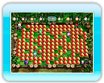
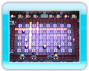
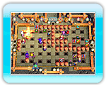
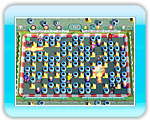
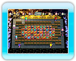
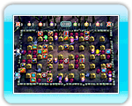

Insgesamt gibt es 10 Stufen. Wähle die Option „Zufall“, damit automatisch eine Stufe ausgewählt wird.
● Klassisch
Die einfachste Stufe.

● Offenes Feld
In dieser Stufe gibt es keine harten Blöcke.

● Powerfreaks In dieser Stufe beginnt jeder Spieler mit einer schnellen Bewegung und mächtigen Bombenexplosionen. Bomben-Kicks und Stöße können ebenfalls eingesetzt werden.
● UFO-Manie
Hier wirst du von einem UFO entführt und wirfst Bomben von oben.

● Schlaglöcher
Diese Stufe ist voller Gruben,
die Bombenexplosionen jedoch durchqueren können.

● Hyperfüße
In dieser Stufe bewegst du
dich von Anfang an mit Höchstgeschwindigkeit.
● Bomben-Bowling
In dieser Stufe fliegen gekickte Bomben in Pfeilrichtung.

● Objektejagd
Hier kannst du von Anfang an Objekte aufsammeln.
● Vulkane Wenn du in dieser Stufe eine Bombe dorthin legst, wo Rauch aufsteigt, verwandelt sie sich in eine gefährliche Bombe mit besonders großer Explosionsreichweite.

● Zombies In dieser Stufe kommen Zombiehände aus der Erde. Wenn sie dich fangen, verlierst du deine Objekte und bist für eine gewisse Zeit gelähmt.
Kartengrößen
Drücke oben oder unten auf , um eine Kartengröße auszuwählen. Du kannst aus 2 Größen wählen: Normale Karte und Große Karte.